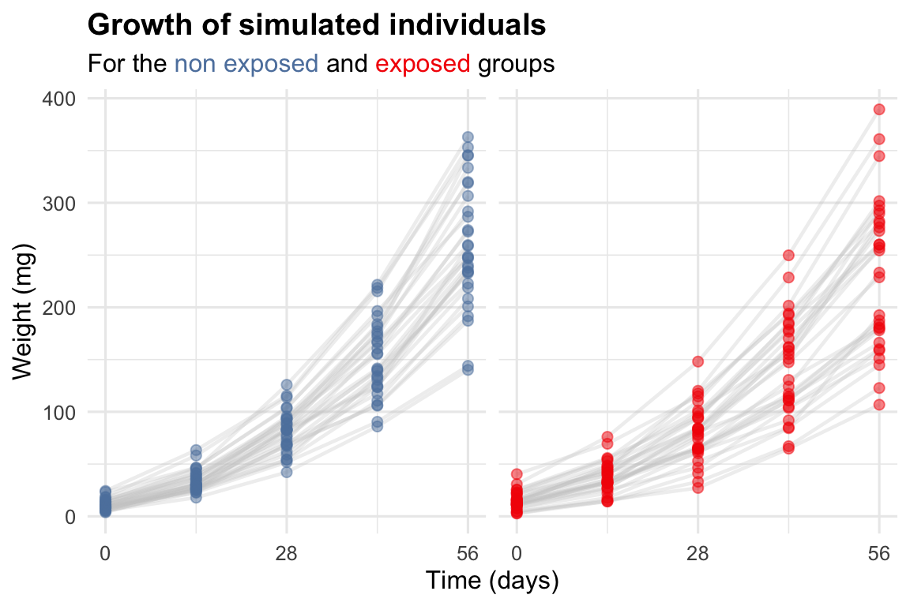
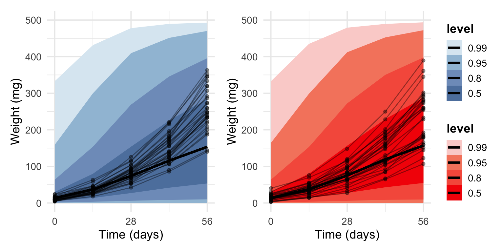

To evaluate individual variations in growth and fungicide sensitivity parameters, a simplified version of the bioenergetic model from Bart et al. (2020) was developed.
We used an individual reaction norm approach (Dingemanse & Dochtermann, 2013) to compare growth rate across exposed and non-exposed individuals. As indicated by (Bart et al., 2020), A. caliginosa growth is approximately linear with the structural volumetric length \(L\) during the juvenile phase of the life-cycle. This structural volumetric length can be calculated as the cubic root of the wet weight of the organisms.
Here, we assume that both cohorts can have a different growth rate \(\alpha\) (mg\(^{1/3}\)/d). We suppose the structural volumetric length at the start of the experiment (\(L0\)) does not depend on the treatment as individuals came from the same pool of individuals.
To take individual variations for both parameters, we assume that each parameter can be considered as a random variable described by a normal distribution whose mean is the population-level value of the parameter and the standard deviation is the individual variation of the parameter. Each individual can then have a parameter value that is taken from this normal distribution.
\(i\) : the individual under a certain exposure \((i \in [\![1,60]\!]),\)
\(c\) : the exposition concentration (0 or 3 RD),
\(L_{c,i}(t)\) : the cubic root of the wet body weight of individual i exposed to the concentration \(c\) at a given time \(t\) (mg\(^{1/3}\)),
\(L_{\mu,c,i}(t)\) : the expected cubic root of the wet body weight of individual \(i\) exposed to the concentration \(c\) at time \(t\),
\(\sigma_L\) : standard deviation of residuals on \(L_{c,i}\), representing the variability not captured by the growth model,
\(L0_i\) : the cubic root of the wet body weight at t=0 (mg\(^{1/3}\)),
\(a_{c,i}\) : the growth rate (mg\(^{1/3}\)/d) of the individual \(i\) exposed to the concentration \(c\),
\(L0_{\mu}\) : mean of the normal distribution for the initial wet body weight (\(L0_i\)),
\(L0_{\sigma}\) : standard deviation of the normal distribution for the initial wet body weight (\(L0_i\)),
\(a_{c,\mu}\) : mean of the normal distribution for the growth rate (\(a_{c,i}\)),
\(a_{c,\sigma}\) : standard deviation of the normal distribution for the growth rate (\(a_{c,i}\)).
Our model is implemented with the brms package which means this mathematical formulation translate to the following formula in the brms language :
L ~ L0+a*t
L0 ~ 1 + (1||ID)
a ~ 0 + exposition+(0+exposition||ID)
Ligne 1 specify the general formula for \(L\),
Ligne 2 specify there is an intercept plus a random effect of ID on \(L0\), in other words that \(L0\) is definied by a population mean and inter-individual variation,
Ligne 3 specify that a depend on exposition and that there is a random effect on \(a\) that depends on the exposition, in other words that \(a\) is definied by a population mean and inter-individual variation and these depend on the exposition.
4.2 Parameter recovery with simulated data
A first step is to look at the parameter recovery with a fit on simulated data.
4.2.1 Data simulation
According to Bart et al. (2020), earthworm initial size is 2.25 mg\(^{1/3}\) (\(L0\)) and grow at xxx mg\(^{1/3}\)/day (\(a\)). Next, we simulate data according to a variation attenuation scenario. To do so, we assume that the average growth rate in earthworms exposed to 3 RD of Swing Gold decreases by 10 % compared to a control cohort, as shown in Bart et al. (2020). We set the individual variability in the control group to 10% around the average growth rate which is coherent with Bart’s data. We set the change in among-individiual variance to 50 %, which would correspond to a moderate effect size of pesticide exposure on growth rate variation.
This gives us the following simulation parameters :
\(L0_{\mu}\) = 2.25 mg\(^{1/3}\)
\(a_{ctrl,\mu}\) = 0.075 mg\(^{1/3}\)/d
\(a_{trt,\mu}\) = 0.0675 mg\(^{1/3}\)/d
\(a_{ctrl,\sigma}\) = 0.0075 mg\(^{1/3}\)/d
\(a_{trt,\sigma}\) = 0.008775 mg\(^{1/3}\)/d
In parallele, the simulated pesticides effect can be expressed with a response ratio (Ln(RR), Equation 5.1) and a coefficient of variation ratio (Ln(CVi), Equation 5.2).
Simulation of the growth rates of non exposed individuals.
3
Simulation of the growth rates of exposed individuals.
4
Simulation of the initial structural length.
5
Dataframe with all individuals from both populations. (0 = Non exposed, 1 = Exposed)
6
Calculation of the real parameters values in the simulated population.
7
Calculation of Ln(RR) and Ln(CVi).
Code
# Times with weight measurementst_values <-seq(0, 56, 14)# Approximate error on Lsd <-0.1# Calculation of each earthworm weight at each time pointdf_sim <- df_pop_sim |>expand_grid(t = t_values) |>mutate(Lhat = L0_i + a_i * t ) |>mutate(L =rtruncnorm(n =n(), mean = Lhat, sd = sd, a =0),w = L^3 ) |>mutate(exposition =as.factor(exposition),ID =as.factor(ID) )
Code
alpha_point <-0.5alpha_line <-0.3p_growth <-ggplot() +geom_line(data=df_sim, aes(x=t, y=w, color=exposition, group=ID ),lwd=0.8, alpha=alpha_line, color ="grey80" ) +geom_point(data=df_sim, aes(x=t, y=w, color=exposition, group=ID ),alpha=alpha_point, size=2 ) +facet_wrap(~exposition) +scale_color_manual(values = pal_col, label =c("Non exposed", "Exposed"), name ="" ) +labs(x ="Time (days)", y ="Weight (mg)",title ="Growth of simulated individuals",subtitle ="For the <span style = 'color:#5E81AC;'>non exposed</span> and <span style = 'color:#f42404;'>exposed</span> groups" )+scale_x_continuous(limits =c(0, 56), breaks =seq(0, 56, by =28), minor_breaks =seq(0, 56, by =14) ) +theme_minimal(12)+theme(legend.position ="none",title=element_markdown(face="bold"),plot.subtitle=element_markdown(face="plain"),axis.title=element_text(face="plain"),strip.background =element_blank(),strip.text =element_blank() )p_growth

Figure 4.1: Growth of simulated individuals
4.2.2 Model definition with brms
Code
# Model definitionbf.mod <-bf( L ~ L0+a*t, L0 ~1+ (1||ID), a ~0+ exposition+(0+exposition||ID),center=F,nl=T )
1
Equation of L depending on t
2
Each individual can have its own L0 value but L0 does not depend on the exposition
3
Each individual can have its own a value and a depend on the exposition
The model parameters are named as follows by brms :
\(L0_{\mu}\) : b_L0_Intercept
\(L0_{\sigma}\) : sd_ID__L0_Intercept
\(a_{\text{ctrl},\mu}\) : b_a_exposition0
\(a_{\text{trt},\mu}\) : b_a_exposition1
\(a_{\text{ctrl},\sigma}\) : sd_ID__a_exposition0
\(a_{\text{trt},\sigma}\) : sd_ID__a_exposition1
4.2.3 Priors definitions
The priors cannot be defined according to the results of Bart et al. (2020). Therefore we base the prior to our general knowledge about A. caliginosa :
Weight at birth is often around 10 to 15 mg and might range from 8 to 20. The prior on \(L0_{\mu}\) can be a normal distribution with a mean of 12.5\(^{1/3}\) = 2.32 mg\(^{1/3}\) and coefficient of variation of 20%. The prior on \(L0_{\sigma}\) can be a normal distribution with a mean of 2.32 \(\times\) 0.2 and a coefficient of variation of 100%. We also know that \(L0_{\mu}\) cannot
An individual typically takes 4 months to be an adult weighting around 600 mg. It gives us a growth rate of 600\(^{1/3}\)/(30 \(\times\) 4) = 0.070 mg\(^{1/3}\)/d. The prior on \(a_{ctrl,\mu}\) can be a normal distribution with a mean of 0.070 and a coefficient of variation of 20% so our prior is less restrictive.
We have no real a priori knowledge about the inter-individual variation of growth. We therefore want a large prior such as a normal distribution with a mean of 15% of the mean growth rate and a coefficient of variation of 100%.
The same priors are given to the two cohorts. A growth rate individual variation of 20% was given as a prior for the two cohort.
In bayesian modeling, we first perform a prior predictive check before fitting the model to our data. This allows us to check on the rationnality of the chosen priors.
Results of the model with the sampling of priors :
A total of 1000 interations are done with 500 that are part of the warmup phase
9
Control parameters on the iterations
10
Path where the model results are saved
Family: gaussian
Links: mu = identity; sigma = identity
Formula: L ~ L0 + a * t
L0 ~ 1 + (1 || ID)
a ~ 0 + exposition + (0 + exposition || ID)
Data: df_sim (Number of observations: 300)
Draws: 4 chains, each with iter = 1000; warmup = 500; thin = 1;
total post-warmup draws = 2000
Multilevel Hyperparameters:
~ID (Number of levels: 60)
Estimate Est.Error l-95% CI u-95% CI Rhat Bulk_ESS Tail_ESS
sd(L0_Intercept) 0.61 0.35 0.05 1.35 1.00 1206 916
sd(a_exposition0) 0.06 0.04 0.00 0.16 1.00 1337 934
sd(a_exposition1) 0.06 0.04 0.00 0.17 1.00 1361 794
Regression Coefficients:
Estimate Est.Error l-95% CI u-95% CI Rhat Bulk_ESS Tail_ESS
L0_Intercept 2.32 0.46 1.41 3.19 1.00 2449 980
a_exposition0 0.07 0.01 0.04 0.10 1.00 2637 1272
a_exposition1 0.07 0.01 0.04 0.10 1.00 3378 1323
Further Distributional Parameters:
Estimate Est.Error l-95% CI u-95% CI Rhat Bulk_ESS Tail_ESS
sigma 0.99 1.01 0.03 3.89 1.00 1644 818
Draws were sampled using sample(hmc). For each parameter, Bulk_ESS
and Tail_ESS are effective sample size measures, and Rhat is the potential
scale reduction factor on split chains (at convergence, Rhat = 1).
We can then plot the predictions of this model and see if they represent at least the full range of our experimental data.
Code
pred <-predicted_draws(m.sim.prior, newdata=df_sim)y_max <-500p_ctrl <-ggplot()+stat_lineribbon(data =subset(pred, exposition ==0), aes(x = t, y = .prediction^3, group = exposition),.width=c(.99,.95,.8,.5),color="black" )+geom_line(data =subset(df_sim, exposition ==0),aes(x = t, y = w, group=ID),color ="black",alpha =0.4 )+geom_point(data =subset(df_sim, exposition ==0),aes(x = t, y = w, group = ID),color ="black",alpha =0.4 )+scale_fill_manual(values =rev(pal_blue))+labs(y="Weight (mg)", x="Time (days)")+ylim(0, y_max)+scale_x_continuous(limits =c(0, 56), breaks =seq(0, 56, by =28), minor_breaks =seq(0, 56, by =14) ) +theme_minimal(14)+theme(legend.position ="none")p_trt <-ggplot()+stat_lineribbon(data =subset(pred, exposition ==1),aes(x = t, y=.prediction^3, group=exposition),.width=c(.99,.95,.8,.5),color="black" )+geom_point(data =subset(df_sim, exposition ==1),aes(x = t, y = w, group = ID),color ="black",alpha =0.4 )+geom_line(data =subset(df_sim, exposition ==1),aes(x = t, y = w, group = ID),color ="black",alpha =0.4 )+scale_fill_manual(values =rev(pal_red))+labs(y="Weight (mg)", x="Time (days)")+ylim(0, y_max)+scale_x_continuous(limits =c(0, 56), breaks =seq(0, 56, by =28), minor_breaks =seq(0, 56, by =14) ) +theme_minimal(14)+theme(legend.position ="none")plot.prior_pred <- p_ctrl + p_trt +plot_layout(ncol =2, guides ="collect") &theme(legend.position ="right", title=element_text(face="bold"), axis.title.x =element_text(face="plain"),axis.title.y =element_text(face="plain") )plot.prior_pred
1
Predictions from the model

Figure 4.3: Prior predictive check.Fresh body weight of simulated non-exposed earthworms (blue points and thin lines, each line corresponding to one individual) and earthworms exposed to the equivalent of 3 RD of Swing® Gold renewed every 28 days (red points and thin lines, each line corresponding to one individual). Colored ribbons correspond to the different credibility intervals for the mean growth for each cohort under the prior distribution. The thicker black lines represent the predicted mean body weight based solely on prior assumptions.
The Figure 4.3 shows the chosen priors are realistic.
The prior sensitivity of our model is explored Section 7.2.
We now check the predictions of the model at the population level (Figure 4.7) and the individual level (Figure 4.8 & Figure 4.9) :
Code
y_max <-480p_ctrl <-ggplot()+stat_lineribbon(data = pred[pred$exposition ==0,],aes(x=t, y=.prediction^3, group=exposition),.width=c(.99,.95,.8,.5),color="black" )+geom_line(data = df_sim[df_sim$exposition ==0,], aes(x = t, y = L^3, group = ID), color ="#141c44", alpha =0.4 )+geom_point(data = df_sim[df_sim$exposition ==0,], aes(x = t, y = L^3, group = ID), color ="#141c44", alpha =0.4 )+ylim(0, y_max)+scale_x_continuous(limits =c(0, 56), breaks =seq(0, 56, by =28), minor_breaks =seq(0, 56, by =14) ) +scale_fill_manual(values =rev(pal_blue))+labs(y="Weight (mg)", x="Time (days)")+theme_minimal()+theme(legend.position ="none")p_trt <-ggplot()+stat_lineribbon(data = pred[pred$exposition ==1,], aes(x=t, y = .prediction^3, group = exposition),.width =c(.99,.95,.8,.5),color ="black" )+geom_point(data = df_sim[df_sim$exposition ==1,], aes(x = t, y = L^3, group = ID), color ="#380000", alpha =0.4 )+geom_line(data = df_sim[df_sim$exposition ==1,], aes(x = t, y = L^3, group = ID), color ="#380000", alpha =0.4 )+scale_x_continuous(limits =c(0, 56), breaks =seq(0, 56, by =28), minor_breaks =seq(0, 56, by =14) ) +ylim(0, y_max)+scale_fill_manual(values =rev(pal_red))+labs(y ="Weight (mg)", x ="Time (days)")+theme_minimal()+theme(legend.position ="none")plot.estimates.grp <- p_ctrl + p_trt +plot_layout(ncol=2, guides="collect") &theme(legend.position ="right", title=element_text(face="bold"), axis.title.x =element_text(face="plain"),axis.title.y =element_text(face="plain") )plot.estimates.grp
Figure 4.7: Posterior predictive check. Fresh body weight of simulated non-exposed earthworms (blue points and thin lines, each line corresponding to one individual) and earthworms exposed to the equivalent of 3 RD of Swing® Gold renewed each 28 days (red points and thin lines, each line corresponding to one individual). Colored ribbons correspond to the different credibility intervals for the mean growth for each cohort. The thicker black lines represent the predicted mean body weight.
Figure 4.8: Posterior predictive check. Fresh body weight of simulated non-exposed earthworms (blue points). Colored ribbons correspond to the different credibility intervals for the predicted growth for each individual. The thicker black lines represent the predicted body weight.
Figure 4.9: Posterior predictive check. Fresh body weight of simulated exposed to the equivalent of 3 RD of Swing® Gold renewed each 28 days (red points). Colored ribbons correspond to the different credibility intervals for the predicted growth for each individual. The thicker black lines represent the predicted body weight.
4.2.5.5 Comparison of the simulated and estimated parameters values
Figure 4.10: Results of the model fit on experimental data. Predicted values are represented with points with their respective credibility interval of 95%. Red points correspond to the predicted value for exposed individuals and blue points for the non exposed individuals. Dashed and dotted lines represent the 1.5-folds and 2-fold changes, respectively. The full line represents the identity line.
Code
# Percentage of points in the X-fold change areaf_fold <-function(fold){ res <-length(subset( df_data_pred_obs, ratio_predobs < fold & ratio_predobs >-fold )$w_obs )/length(subset(df_data_pred_obs, !is.na(w_obs))$t)return(res)}df_fold <-data.frame(fold =c(1.05, 1.075, 1, 1.25, 1.5, 2)) %>%mutate(per =signif(mapply(f_fold, fold),2)*100)colnames(df_fold) <-c("Fold", "Percentage of predictions within")df_fold |>datatable(options =list(dom ='t'), class="hover")
Table 4.3: Percentage of points in the X-fold change area
Figure 4.11: Comparison of simulated vs predicted parameters values. Vertical lines represent the true values of the simulated population parameters.
Figure 4.11 shows the posterior distributions of estimated parameters, with vertical black lines indicating the true population values. The results demonstrate good parameter recovery, as the distributions are generally centered around the true values. Estimates for initial structural length, growth rate, and pesticide effects align well with the simulated data, indicating accurate inference.
Parameter recovery is excellent at the population level, with absolute errors below 0.5%, and strong at the individual level, with absolute errors between 4 to 5%.
Bart, S., Pelosi, C., Nélieu, S., Lamy, I., & Péry, A. R. R. (2020). An energy-based model to analyze growth data of earthworms exposed to two fungicides. Environmental Science and Pollution Research, 27(1), 741–750. https://doi.org/10.1007/s11356-019-06985-z
Dingemanse, N. J., & Dochtermann, N. A. (2013). Quantifying individual variation in behaviour: Mixed‐effect modelling approaches. Journal of Animal Ecology, 82(1), 39–54. https://doi.org/10.1111/1365-2656.12013
Source Code
```{r libraries, include=F, warning=F, message=F}library(here)source(file = here::here("functions/functions.R"))f_load_libraries_colors()```# A model for earthworm growth and its individual variation## Model definitionTo evaluate individual variations in growth and fungicide sensitivity parameters, a simplified version of the bioenergetic model from @bart_2020a was developed.We used an individual reaction norm approach [@dingemanse_2013] to compare growth rate across exposed and non-exposed individuals. As indicated by [@bart_2020a], *A. caliginosa* growth is approximately linear with the structural volumetric length $L$ during the juvenile phase of the life-cycle. This structural volumetric length can be calculated as the cubic root of the wet weight of the organisms.Here, we assume that both cohorts can have a different growth rate $\alpha$ (mg$^{1/3}$/d). We suppose the structural volumetric length at the start of the experiment ($L0$) does not depend on the treatment as individuals came from the same pool of individuals.To take individual variations for both parameters, we assume that each parameter can be considered as a random variable described by a normal distribution whose mean is the population-level value of the parameter and the standard deviation is the individual variation of the parameter. Each individual can then have a parameter value that is taken from this normal distribution.This gives us @eq-growth.$$\begin{aligned}L_{c,i} &\sim \mathcal{N}(L_{\mu,c,i}, \sigma_L)\\L_{\mu,c,i}(t)&=L0_i+a_{c,i}\times t \\\text{With}\\L0_{i} &\sim \mathcal{N}(L0_{\mu}, L0_{\sigma})\\a_{c,i} &\sim \mathcal{N}(a_{c,\mu}, a_{c,\sigma})\end{aligned}$$ {#eq-growth}With :- $i$ : the individual under a certain exposure $(i \in [\![1,60]\!]),$- $c$ : the exposition concentration (0 or 3 RD),- $L_{c,i}(t)$ : the cubic root of the wet body weight of individual i exposed to the concentration $c$ at a given time $t$ (mg$^{1/3}$),- $L_{\mu,c,i}(t)$ : the expected cubic root of the wet body weight of individual $i$ exposed to the concentration $c$ at time $t$,- $\sigma_L$ : standard deviation of residuals on $L_{c,i}$, representing the variability not captured by the growth model,- $L0_i$ : the cubic root of the wet body weight at t=0 (mg$^{1/3}$),- $a_{c,i}$ : the growth rate (mg$^{1/3}$/d) of the individual $i$ exposed to the concentration $c$,- $L0_{\mu}$ : mean of the normal distribution for the initial wet body weight ($L0_i$),- $L0_{\sigma}$ : standard deviation of the normal distribution for the initial wet body weight ($L0_i$),- $a_{c,\mu}$ : mean of the normal distribution for the growth rate ($a_{c,i}$),- $a_{c,\sigma}$ : standard deviation of the normal distribution for the growth rate ($a_{c,i}$).Our model is implemented with the `brms` package which means this mathematical formulation translate to the following formula in the `brms` language :1. `L ~ L0+a*t`\2. `L0 ~ 1 + (1||ID)`\3. `a ~ 0 + exposition+(0+exposition||ID)`- Ligne 1 specify the general formula for $L$,- Ligne 2 specify there is an intercept plus a random effect of ID on $L0$, in other words that $L0$ is definied by a population mean and inter-individual variation,- Ligne 3 specify that a depend on exposition and that there is a random effect on $a$ that depends on the exposition, in other words that $a$ is definied by a population mean and inter-individual variation and these depend on the exposition.## Parameter recovery with simulated dataA first step is to look at the parameter recovery with a fit on simulated data.### Data simulationAccording to @bart_2020a, earthworm initial size is 2.25 mg$^{1/3}$ ($L0$) and grow at xxx mg$^{1/3}$/day ($a$). Next, we simulate data according to a variation attenuation scenario. To do so, we assume that the average growth rate in earthworms exposed to 3 RD of Swing Gold decreases by 10 % compared to a control cohort, as shown in @bart_2020a. We set the individual variability in the control group to 10% around the average growth rate which is coherent with Bart's data. We set the change in among-individiual variance to 50 %, which would correspond to a moderate effect size of pesticide exposure on growth rate variation.This gives us the following simulation parameters :- $L0_{\mu}$ = 2.25 mg$^{1/3}$- $a_{ctrl,\mu}$ = 0.075 mg$^{1/3}$/d- $a_{trt,\mu}$ = 0.0675 mg$^{1/3}$/d- $a_{ctrl,\sigma}$ = 0.0075 mg$^{1/3}$/d- $a_{trt,\sigma}$ = 0.008775 mg$^{1/3}$/dIn parallele, the simulated pesticides effect can be expressed with a response ratio (Ln(RR), @eq-LnRR) and a coefficient of variation ratio (Ln(CVi), @eq-LnCVi).$$\text{Ln}(\text{RR}) = \text{Ln}\left( \frac{a_{ctrl,\mu}}{a_{trt,\mu}} \right)$$ {#eq-LnRR}$$\text{Ln}(\text{CVi}) = \text{Ln}\left( \frac{CV_{ctrl}}{CV_{trt}} \right) - \frac{1}{2(n_{trt}-1)}-\frac{1}{2(n_{ctrl}-1)}\\$$ {#eq-LnCVi}With :$$CV_{x}=\frac{a_{x,\sigma}}{a_{x,\mu}}$$```{r datasim1}#| code-fold: shownb_ind_sim <- 30 # <1>set.seed(242412)a_ctrl_mu_mu <- 0.075a_ctrl_mu_sd <- a_ctrl_mu_mu*0.1a_trt_mu_mu <- 0.0675a_trt_mu_sd <- a_ctrl_mu_mu*0.1*(1+0.5)L0_mu <- 2.25L0_sd <- 0.45List_a_i_ctrl <- rnorm( # <2> nb_ind_sim, # <2> a_ctrl_mu_mu, # <2> a_ctrl_mu_sd # <2> ) # <2>List_a_i_trt <- rnorm( # <3> nb_ind_sim, # <3> a_trt_mu_mu, # <3> a_trt_mu_sd # <3> ) # <3>List_L0_i <- rnorm( # <4> nb_ind_sim*2, # <4> L0_mu, # <4> L0_sd # <4> ) # <4>df_pop_sim <- data.frame( # <5> ID = seq(1, nb_ind_sim*2, 1), # <5> L0_i = List_L0_i, # <5> a_i = c(List_a_i_ctrl, List_a_i_trt), # <5> exposition = c( # <5> rep(0, nb_ind_sim), # <5> rep(1, nb_ind_sim) # <5> ) # <5> ) # <5># Real pop values sim_a_ctrl_mu <- with(subset(df_pop_sim, exposition == 0), mean(a_i)) # <6>sim_a_ctrl_sd <- with(subset(df_pop_sim, exposition == 0), sd(a_i)) # <6>sim_a_trt_mu <- with(subset(df_pop_sim, exposition == 1), mean(a_i)) # <6>sim_a_trt_sd <- with(subset(df_pop_sim, exposition == 1), sd(a_i)) # <6>sim_L0_mu <- with(df_pop_sim, mean(L0_i)) # <6>sim_L0_sd <- with(df_pop_sim, sd(L0_i)) # <6>sim_LnRR <- log(sim_a_trt_mu/sim_a_ctrl_mu) # <7>sim_LnCVi <- log((sim_a_trt_sd/sim_a_trt_mu)/(sim_a_ctrl_sd/sim_a_ctrl_mu)) # <7>tmp <- sim_a_trt_sd/sim_a_ctrl_sd```1. Number of individuals in each populations.2. Simulation of the growth rates of non exposed individuals.3. Simulation of the growth rates of exposed individuals.4. Simulation of the initial structural length.5. Dataframe with all individuals from both populations. (0 = Non exposed, 1 = Exposed)6. Calculation of the real parameters values in the simulated population.7. Calculation of Ln(RR) and Ln(CVi).```{r datasim2}#| code-fold: show# Times with weight measurementst_values <- seq(0, 56, 14)# Approximate error on Lsd <- 0.1# Calculation of each earthworm weight at each time pointdf_sim <- df_pop_sim |> expand_grid(t = t_values) |> mutate( Lhat = L0_i + a_i * t ) |> mutate( L = rtruncnorm(n = n(), mean = Lhat, sd = sd, a = 0), w = L^3 ) |> mutate( exposition = as.factor(exposition), ID = as.factor(ID) )``````{r simdataplot, warning=F, message=F}#| fig-cap: Growth of simulated individuals#| label: fig-growthdatasim#| fig-width: 6#| fig-height: 4alpha_point <- 0.5alpha_line <- 0.3p_growth <- ggplot() + geom_line( data=df_sim, aes( x=t, y=w, color=exposition, group=ID ), lwd=0.8, alpha=alpha_line, color = "grey80" ) + geom_point( data=df_sim, aes( x=t, y=w, color=exposition, group=ID ), alpha=alpha_point, size=2 ) + facet_wrap(~exposition) + scale_color_manual( values = pal_col, label = c("Non exposed", "Exposed"), name = "" ) + labs( x = "Time (days)", y = "Weight (mg)", title = "Growth of simulated individuals", subtitle = "For the <span style = 'color:#5E81AC;'>non exposed</span> and <span style = 'color:#f42404;'>exposed</span> groups" )+ scale_x_continuous( limits = c(0, 56), breaks = seq(0, 56, by = 28), minor_breaks = seq(0, 56, by = 14) ) + theme_minimal(12)+ theme( legend.position = "none", title=element_markdown(face="bold"), plot.subtitle=element_markdown(face="plain"), axis.title=element_text(face="plain"), strip.background = element_blank(), strip.text = element_blank() )p_growth```### Model definition with `brms````{r moddef}#| code-fold: show# Model definitionbf.mod <- bf( L ~ L0+a*t, # <1> L0 ~ 1 + (1||ID), # <2> a ~ 0 + exposition+(0+exposition||ID), # <3> center=F, # <4> nl=T # <5> ) ```1. Equation of L depending on t2. Each individual can have its own L0 value but L0 does not depend on the exposition3. Each individual can have its own a value and a depend on the exposition4. Data are centered in the calculation process5. Our parameters have non-linear definitions```{r modparamlist}List_parameters <- c( "b_L0_Intercept", # L0_mu "sd_ID__L0_Intercept", # L0_sd "b_a_exposition0", # a_ctrl_mu "b_a_exposition1", # a_trt_mu "sd_ID__a_exposition0", # a_ctrl_sd "sd_ID__a_exposition1", # a_trt_sd "sigma" # Residuals variance )```The model parameters are named as follows by `brms` :- $L0_{\mu}$ : `b_L0_Intercept`- $L0_{\sigma}$ : `sd_ID__L0_Intercept`- $a_{\text{ctrl},\mu}$ : `b_a_exposition0`- $a_{\text{trt},\mu}$ : `b_a_exposition1`- $a_{\text{ctrl},\sigma}$ : `sd_ID__a_exposition0`- $a_{\text{trt},\sigma}$ : `sd_ID__a_exposition1`### Priors definitions {#sec-Cpriorsdef}The priors cannot be defined according to the results of @bart_2020a. Therefore we base the prior to our general knowledge about *A. caliginosa* :- Weight at birth is often around 10 to 15 mg and might range from 8 to 20. The prior on $L0_{\mu}$ can be a normal distribution with a mean of 12.5$^{1/3}$ = 2.32 mg$^{1/3}$ and coefficient of variation of 20%. The prior on $L0_{\sigma}$ can be a normal distribution with a mean of 2.32 $\times$ 0.2 and a coefficient of variation of 100%. We also know that $L0_{\mu}$ cannot- An individual typically takes 4 months to be an adult weighting around 600 mg. It gives us a growth rate of 600$^{1/3}$/(30 $\times$ 4) = 0.070 mg$^{1/3}$/d. The prior on $a_{ctrl,\mu}$ can be a normal distribution with a mean of 0.070 and a coefficient of variation of 20% so our prior is less restrictive.- We have no real *a priori* knowledge about the inter-individual variation of growth. We therefore want a large prior such as a normal distribution with a mean of 15% of the mean growth rate and a coefficient of variation of 100%.The same priors are given to the two cohorts. A growth rate individual variation of 20% was given as a prior for the two cohort.```{r priorsdef}#| code-fold: show# Priors definitionpriors <- prior(normal(2.32, 2.32*0.2), class = b, nlpar = L0, lb = 0) + # <1> prior(normal(2.32*0.2, 2.32*0.2), class = sd, nlpar = L0)+ # <2> prior(normal(0.070, 0.070*0.2), class=b, coef=exposition0, nlpar = a) + # <3> prior(normal(0.070, 0.070*0.2), class=b, coef=exposition1, nlpar = a) + # <4> prior(normal(0.070*0.2, 0.070), class=sd, # <5> coef=exposition0, group=ID, nlpar = a)+ # <5> prior(normal(0.070*0.2, 0.070), class=sd, # <6> coef=exposition1, group=ID, nlpar = a)+ # <6> prior(exponential(1), sigma, nlpar="") # <7>```1. Prior on $L0_{\mu}$2. Prior on $L0_{\sigma}$3. Prior on $a_{\text{ctrl},\mu}$4. Prior on $a_{\text{trt},\mu}$5. Prior on $a_{\text{ctrl},\sigma}$6. Prior on $a_{\text{trt},\sigma}$7. Prior on residuals```{r priorsplot}#| fig-cap: Priors of our model.#| label: fig-priorplot#| fig-height: 12#| fig-width: 12col_dens <- Nord_polar[1]alpha_dens <- 0.5sizetitle <- 18priors$nlpar <- factor(priors$nlpar, levels = c("L0", "a")) p1 <- priors %>% parse_dist() %>% filter(class == "b") %>% ggplot( aes( xdist = .dist_obj, y = format(.dist_obj), color = coef, fill = coef ) ) + stat_dist_halfeye( alpha = alpha_dens ) + facet_wrap( ~nlpar+coef, scales = "free" ) + scale_color_manual(values = c(Nord_polar[4], Nord_frost[4], col_red))+ scale_fill_manual(values = c(Nord_polar[4], Nord_frost[4], col_red))+ ggtitle("Intercepts") + labs( x = "Value", y = "Density" )+ theme_minimal()+ theme( axis.text.y = element_text(angle = 90), plot.title = element_text(face="bold", size = sizetitle), strip.text = element_text(face="plain", size = sizetitle-2), )p2 <- priors %>% parse_dist() %>% filter(class == "sd") %>% ggplot( aes( xdist = .dist_obj, y = format(.dist_obj), color = coef, fill = coef ) ) + stat_dist_halfeye( alpha = alpha_dens ) + facet_wrap( ~nlpar+coef, scales = "free" ) + scale_color_manual(values = c(Nord_polar[4], Nord_frost[4], col_red))+ scale_fill_manual(values = c(Nord_polar[4], Nord_frost[4], col_red))+ ggtitle("Inter-individual variances") + labs( x = "Value", y = "Density" )+ theme_minimal()+ theme( axis.text.y = element_text(angle = 90), plot.title = element_text(face="bold", size = sizetitle), strip.text = element_text(face="plain", size = sizetitle-2), )p3 <- priors %>% parse_dist() %>% filter(class == "sigma") %>% ggplot( aes( xdist = .dist_obj, y = format(.dist_obj), color = coef, fill = coef ) ) + stat_dist_halfeye( # fill = col_dens, # color = col_dens, alpha = alpha_dens ) + facet_wrap( ~nlpar, scales = "free" ) + scale_color_manual(values = c(Nord_polar[4], Nord_frost[4], col_red))+ scale_fill_manual(values = c(Nord_polar[4], Nord_frost[4], col_red))+ ggtitle("Residual variance") + labs( x = "Value", y = "Density" )+ theme_minimal()+ theme( axis.text.y = element_text(angle = 90), plot.title = element_text(face="bold", size = sizetitle), strip.text = element_text(face="plain", size = sizetitle-2), )p <- plot_grid( p1, p2, p3, ncol = 1, align = "v", axis = "l")p``````{r savepriorsplot, include=F, message=F, warning=F}ggsave( filename="ModVI_priors.png", plot=p, width=8, height = 10, path=here::here("fig/") )ggsave( filename="ModVI_priors.svg", plot=p, width=8, height = 10, path=here::here("fig/") )```### Prior predictive checkIn bayesian modeling, we first perform a prior predictive check before fitting the model to our data. This allows us to check on the rationnality of the chosen priors.Results of the model with the sampling of priors :```{r priorcheck, warning=F, message=F}#| code-fold: showm.sim.prior <- brm( data = df_sim, # <1> bf.mod, # <2> backend = "cmdstanr", # <3> prior = priors, # <4> sample_prior = "only", # <5> cores = 4, # <6> seed = 1212, # <7> iter = 1000, warmup = 500, # <8> control = list( adapt_delta = .95, # <9> max_treedepth = 12 # <9> ), file=here::here("mod/m_brms_prior_sim") # <10> )print(m.sim.prior)```1. Data used2. Model to be used3. Type of backend for calculations4. Priors to be used5. Work only done with priors and not the data6. Cores for calculations7. Seed for reproducibility8. A total of 1000 interations are done with 500 that are part of the warmup phase9. Control parameters on the iterations10. Path where the model results are savedWe can then plot the predictions of this model and see if they represent at least the full range of our experimental data.```{r priorpredcheck, warning=F}#| fig-cap: Prior predictive check.Fresh body weight of simulated non-exposed earthworms (blue points and thin lines, each line corresponding to one individual) and earthworms exposed to the equivalent of 3 RD of Swing® Gold renewed every 28 days (red points and thin lines, each line corresponding to one individual). Colored ribbons correspond to the different credibility intervals for the mean growth for each cohort under the prior distribution. The thicker black lines represent the predicted mean body weight based solely on prior assumptions.#| label: fig-priorpredVIsim#| fig-height: 4#| fig-width: 8pred <- predicted_draws(m.sim.prior, newdata=df_sim) # <1> y_max <- 500p_ctrl <- ggplot()+ stat_lineribbon( data = subset(pred, exposition == 0), aes(x = t, y = .prediction^3, group = exposition), .width=c(.99,.95,.8,.5), color="black" )+ geom_line( data = subset(df_sim, exposition == 0), aes(x = t, y = w, group=ID), color = "black", alpha = 0.4 )+ geom_point( data = subset(df_sim, exposition == 0), aes(x = t, y = w, group = ID), color = "black", alpha = 0.4 )+ scale_fill_manual(values = rev(pal_blue))+ labs(y="Weight (mg)", x="Time (days)")+ ylim(0, y_max)+ scale_x_continuous( limits = c(0, 56), breaks = seq(0, 56, by = 28), minor_breaks = seq(0, 56, by = 14) ) + theme_minimal(14)+ theme(legend.position = "none")p_trt <- ggplot()+ stat_lineribbon( data = subset(pred, exposition == 1), aes(x = t, y=.prediction^3, group=exposition), .width=c(.99,.95,.8,.5), color="black" )+ geom_point( data = subset(df_sim, exposition == 1), aes(x = t, y = w, group = ID), color = "black", alpha = 0.4 )+ geom_line( data = subset(df_sim, exposition == 1), aes(x = t, y = w, group = ID), color = "black", alpha = 0.4 )+ scale_fill_manual(values = rev(pal_red))+ labs(y="Weight (mg)", x="Time (days)")+ ylim(0, y_max)+ scale_x_continuous( limits = c(0, 56), breaks = seq(0, 56, by = 28), minor_breaks = seq(0, 56, by = 14) ) + theme_minimal(14)+ theme(legend.position = "none")plot.prior_pred <- p_ctrl + p_trt + plot_layout(ncol = 2, guides = "collect") & theme( legend.position = "right", title=element_text(face="bold"), axis.title.x = element_text(face="plain"), axis.title.y = element_text(face="plain") )plot.prior_pred```1. Predictions from the modelThe @fig-priorpredVIsim shows the chosen priors are realistic.The prior sensitivity of our model is explored @sec-Fpriorsens.### Posterior predictive check#### Model fitWe can now fit the model to our simulated data.```{r modrun, warning=F, message=F}#| code-fold: showm.sim.post <- brm( data = df_sim, # <1> bf.mod, # <2> backend = "cmdstanr", # <3> prior = priors, # <4> save_pars = save_pars(all = TRUE), # <5> sample_prior = "yes", # <6> seed = 12121212, # <7> chains = 4, cores = 4, # <8> iter = 6000, warmup = 1000, # <9> control = list(adapt_delta = .95, # <10> max_treedepth = 12), # <10> file=here::here("mod/m_brms_post_sim") # <11> )print(m.sim.post)```1. Data used2. Model to be used3. Type of backend for calculations4. Priors to be used5. We want all parameters to be saved6. Work done with priors and the data7. Number of chains and cores for calculations8. Seed for reproducibility9. A total of 6000 interations are done with 1000 that are part of the warmup phase10. Control parameters on the iterations11. Path where the model results are saved#### Parameter estimation resultsChains recuperation and calculation of additional parameters :```{r chains}df_chains <- ggs(m.sim.post, burnin = T) |> # <1> filter(Parameter %in% List_parameters) |> # <1> mutate( # <1> Chain=as.factor(Chain), # <1> value=value # <1> ) # <1>df_chains_post <- df_chains |> # <2> filter(Iteration>1000) # <2>df_chains_median <- df_chains_post |> # <3> aggregate(value ~ Parameter, median) |> # <3> rename(median = value) # <3>df_chains_post_large <- # <4> dcast( # <4> data = df_chains_post, # <4> formula = Iteration + Chain ~ Parameter, # <4> value.var = 'value' # <4> ) # <4>df_chains_post_large <- df_chains_post_large |> # <4> mutate( # <4> Delta_a_mu = b_a_exposition1-b_a_exposition0, # <4> Ratio_a_mu = b_a_exposition1/b_a_exposition0, # <4> Delta_a_sd = sd_ID__a_exposition1-sd_ID__a_exposition0, # <4> Ratio_a_sd = sd_ID__a_exposition1/sd_ID__a_exposition0, # <4> LnRR = log(b_a_exposition1/b_a_exposition0), # <4> LnCVi = log((sd_ID__a_exposition1/b_a_exposition1)/(sd_ID__a_exposition0/b_a_exposition0)) # <4> )df_chains_post_long <- df_chains_post_large |> # <4> melt( # <4> id.vars=c("Iteration", "Chain"), # <4> measure.vars=colnames(df_chains_post_large)[-c(1,2)], # <4> variable.name="Parameter", # <4> value.name="value" # <4> ) # <4>Param_a_mu <- c( "b_a_exposition0", "b_a_exposition1" )Param_a_sd <- c( "sd_ID__a_exposition0", "sd_ID__a_exposition1" )Param_ctrl <- c( "b_a_exposition0", "sd_ID__a_exposition0" )Param_trt <- c( "b_a_exposition1", "sd_ID__a_exposition1" )Param_t0 <- c( "b_L0_Intercept", "sd_ID__L0_Intercept", "Delta_a_mu", "Delta_a_sd" )df_chains_post_long <- df_chains_post_long |> mutate( exposition = case_when( Parameter %in% Param_ctrl ~ "Non exposed", Parameter %in% Param_trt ~ "Exposed", Parameter %in% Param_t0 ~ "General") )```1. Extraction of each chain iterations values for each parameters2. Only iterations after the warmup phase3. Adding medians from each distribution4. Calculation delta and ratios between non-exposed and exposed individuals```{r comppriorpost}#| fig-cap: Prior (light grey) and posterior distributions for each parameter.#| label: fig-priorpost#| fig-height: 12#| fig-width: 12alpha_dens <- 0.5alpha_dens_prior <- 0.2font_size <- 12col_dens <- Nord_polar[1]col_dens_ctrl <- Nord_frost[4]col_dens_trt <- col_redsize_norm <- 0.7prior_L0_mu <- priors %>% parse_dist() %>% filter(class == "b" & nlpar == "L0")prior_L0_sd <- priors %>% parse_dist() %>% filter(class == "sd" & nlpar == "L0")prior_a_ctrl_mu <- priors %>% parse_dist() %>% filter(class == "b" & nlpar == "a" & coef == "exposition0")prior_a_ctrl_sd <- priors %>% parse_dist() %>% filter(class == "sd" & nlpar == "a" & coef == "exposition0")prior_a_trt_mu <- priors %>% parse_dist() %>% filter(class == "b" & nlpar == "a" & coef == "exposition1")prior_a_trt_sd <- priors %>% parse_dist() %>% filter(class == "sd" & nlpar == "a" & coef == "exposition1")prior_sigma <- priors %>% parse_dist() %>% filter(class == "sigma")plot_L0_mu <- ggplot() + stat_dist_halfeye( data = prior_L0_mu, aes( xdist = .dist_obj ), fill = col_dens, color = col_dens, alpha = alpha_dens_prior ) + stat_halfeye( data = subset(df_chains_post_long,Parameter == "b_L0_Intercept"), mapping = aes( x=value, ), fill = col_dens, color = col_dens, alpha = alpha_dens ) + labs( x = "Value", y = "Density", title = bquote(bold("Mean initial structural length " (mg^{1/3}))) )+ theme_minimal()+ theme( axis.text.y = element_text(angle = 90), plot.title = element_text(face = "bold") )plot_L0_sd <- ggplot() + stat_dist_halfeye( data = prior_L0_sd, aes( xdist = .dist_obj ), fill = col_dens, color = col_dens, alpha = alpha_dens_prior ) + stat_halfeye( data = subset(df_chains_post_long,Parameter == "sd_ID__L0_Intercept"), mapping = aes( x=value, ), fill = col_dens, color = col_dens, alpha = alpha_dens ) + labs( x = "Value", y = "Density", title = bquote(bold("Individual variation of\ninitial structural length " (mg^{1/3}))) )+ theme_minimal()+ theme( axis.text.y = element_text(angle = 90), plot.title = element_text(face = "bold") )plot_a_ctrl_mu <- ggplot() + stat_dist_halfeye( data = prior_a_ctrl_mu, aes( xdist = .dist_obj ), fill = col_dens, color = col_dens, alpha = alpha_dens_prior ) + stat_halfeye( data = subset(df_chains_post_long,Parameter == "b_a_exposition0"), mapping = aes( x=value, ), fill = col_dens_ctrl, color = col_dens_ctrl, alpha = alpha_dens ) + labs( x = "Value", y = "Density", title = bquote(bold("Mean growth rate " (mg^{1/3}/d))), subtitle = "Non-exposed" )+ theme_minimal()+ theme( axis.text.y = element_text(angle = 90), plot.title = element_text(face = "bold") )plot_a_trt_mu <- ggplot() + stat_dist_halfeye( data = prior_a_trt_mu, aes( xdist = .dist_obj ), fill = col_dens, color = col_dens, alpha = alpha_dens_prior ) + stat_halfeye( data = subset(df_chains_post_long,Parameter == "b_a_exposition1"), mapping = aes( x=value, ), fill = col_dens_trt, color = col_dens_trt, alpha = alpha_dens ) + labs( x = "Value", y = "Density", title = bquote(bold("Mean growth rate " (mg^{1/3}/d))), subtitle = "Exposed" )+ theme_minimal()+ theme( axis.text.y = element_text(angle = 90), plot.title = element_text(face = "bold") )plot_a_ctrl_sd <- ggplot() + stat_dist_halfeye( data = prior_a_ctrl_sd, aes( xdist = .dist_obj ), fill = col_dens, color = col_dens, alpha = alpha_dens_prior ) + stat_halfeye( data = subset(df_chains_post_long,Parameter == "sd_ID__a_exposition0"), mapping = aes( x=value, ), fill = col_dens_ctrl, color = col_dens_ctrl, alpha = alpha_dens ) + labs( x = "Value", y = "Density", title = bquote(bold("Inter-individual variation\nof growth rate " (mg^{1/3}/d))), subtitle = "Non-exposed" )+ theme_minimal()+ theme( axis.text.y = element_text(angle = 90), plot.title = element_text(face = "bold") )plot_a_trt_sd <- ggplot() + stat_dist_halfeye( data = prior_a_trt_sd, aes( xdist = .dist_obj ), fill = col_dens, color = col_dens, alpha = alpha_dens_prior ) + stat_halfeye( data = subset(df_chains_post_long,Parameter == "sd_ID__a_exposition1"), mapping = aes( x=value, ), fill = col_dens_trt, color = col_dens_trt, alpha = alpha_dens ) + labs( x = "Value", y = "Density", title = bquote(bold("Inter-individual variation\nof growth rate " (mg^{1/3}/d))), subtitle = "Exposed" )+ theme_minimal()+ theme( axis.text.y = element_text(angle = 90), plot.title = element_text(face = "bold") )plot_sigma <- ggplot() + stat_dist_halfeye( data = prior_sigma, aes( xdist = .dist_obj ), fill = col_dens, color = col_dens, alpha = alpha_dens_prior ) + stat_halfeye( data = subset(df_chains_post_long,Parameter == "sigma"), mapping = aes( x=value, ), fill = col_dens, color = col_dens, alpha = alpha_dens ) + labs( x = "Value", y = "Density", title = bquote(bold("Residual variance" (mg^{1/3}))) )+ theme_minimal()+ theme( axis.text.y = element_text(angle = 90), plot.title = element_text(face = "bold") )p <- (plot_L0_mu+ plot_a_ctrl_mu + plot_a_trt_mu)/(plot_L0_sd + plot_a_ctrl_sd + plot_a_trt_sd) / plot_sigma p```Parameters estimation results :```{r tableres}#| tbl-cap: Different statistical values of the posterior distributions#| label: tbl-compvalposttheoVIdf_res_VI <- summarise_draws(tidy_draws(m.sim.post))df_res_VI_show <- df_res_VI[1:7,]df_res_VI_show |> datatable( options = list( dom = 't', columnDefs = list( list(className = 'dt-left', targets = "_all") ) ), class="hover" ) |> formatRound(columns = 2:length(df_res_VI_show), digits = 2)``````{r lnRRCVI}#| tbl-cap: Effect size results#| label: tbl-lnRRCVI# Calculation of the results for Ln(RR) and Ln(CVi)Median_LnRR <- median(subset(df_chains_post_long, Parameter=="LnRR")$value)Median_LnCVi <- median(subset(df_chains_post_long, Parameter=="LnCVi")$value)Median_LnRR_print <- round(Median_LnRR, 2)Median_LnCVi_print <- round(Median_LnCVi, 2)Median_Ratio_a_mu <- median(subset(df_chains_post_long, Parameter=="Ratio_a_mu")$value)Median_Ratio_a_sd <- median(subset(df_chains_post_long, Parameter=="Ratio_a_sd")$value)CI_Ratio_a_mu <- bayestestR::ci(subset(df_chains_post_long, Parameter=="Ratio_a_mu")$value, method = "ETI", ci = 0.90)CI_Ratio_a_mu_p <- paste("[", round(CI_Ratio_a_mu$CI_low,2), " ; ", round(CI_Ratio_a_mu$CI_high,2), "]", sep="")CI_Ratio_a_sd <- bayestestR::ci(subset(df_chains_post_long, Parameter=="Ratio_a_sd")$value, method = "ETI", ci = 0.90)CI_Ratio_a_sd_p <- paste("[", round(CI_Ratio_a_sd$CI_low,2), " ; ", round(CI_Ratio_a_sd$CI_high,2), "]", sep="")CI_LnRR <- bayestestR::ci(subset(df_chains_post_long, Parameter=="LnRR")$value, method = "ETI", ci = 0.90)CI_LnRR_p <- paste("[", round(CI_LnRR$CI_low,2), " ; ", round(CI_LnRR$CI_high,2), "]", sep="")CI_LnCVi <- bayestestR::ci(subset(df_chains_post_long, Parameter=="LnCVi")$value, ci = 0.90)CI_LnCVi_p <- paste("[", round(CI_LnCVi$CI_low,2), " ; ", round(CI_LnCVi$CI_high,2), "]", sep="")pd_LnRR <- p_direction(subset(df_chains_post_long, Parameter=="LnRR")$value)pd_LnCVi <- p_direction(subset(df_chains_post_long, Parameter=="LnCVi")$value)pd_Ratio_a_mu <- p_direction(subset(df_chains_post_long, Parameter=="Ratio_a_mu")$value)pd_Ratio_a_sd <- p_direction(subset(df_chains_post_long, Parameter=="Ratio_a_sd")$value)df_res_Ln <- data.frame( Variable = c("LnRR", "LnCVi", "Ratio a_mu", "Ratio a_sd"), Median = c(Median_LnRR, Median_LnCVi, Median_Ratio_a_mu, Median_Ratio_a_sd), CI = c(CI_LnRR_p, CI_LnCVi_p, CI_Ratio_a_mu_p, CI_Ratio_a_sd_p), pd = c(pd_LnRR$pd, pd_LnCVi$pd, pd_Ratio_a_mu$pd, pd_Ratio_a_sd$pd)) |> mutate( Median = round(Median, 3) )# Results expressed as LnRR and LnCVidf_res_Ln |> datatable( options = list( dom = 't', autoWidth = TRUE, columnDefs = list( list(className = 'dt-left', targets = "_all") ) ), class="hover" ) |> formatRound(columns = c(2,4), digits = 2)```#### ChainsWe can check if the chains look good (@fig-chainsVI).```{r chainspost, echo=T, message=F, warning=F}#| fig-cap: Parameters chains (without the first 1000 iterations of warmup).#| label: fig-chainsVI#| fig-height: 5#| fig-width: 8plot <- ggplot( data = df_chains_post, aes(x = Iteration, y = value, color = Chain, group = Chain) )+ geom_line(alpha=0.7)+ facet_wrap(~Parameter, scales = "free", ncol = 3)+ scale_color_manual(values = nord(palette = "frost"))+ theme_bw()+ theme( legend.position = "right", title=element_text(size=12, face="plain"), axis.title.x = element_text(face="plain"), strip.background = element_rect(fill="white") )plot```We can also check on the parameters correlations (@fig-pairsVIsim).```{r pairs, echo = T}#| fig-cap: Parameters correlations#| label: fig-pairsVIsim#| fig-height: 10#| fig-width: 10bayesplot::color_scheme_set("gray")p <- pairs(m.sim.post, regex=T)p```#### Model predictions```{r dfpred, warning=F, message=F}pred <- predicted_draws(m.sim.post, newdata=df_sim)post_i <- as.data.frame(posterior_summary(m.sim.post))ID <- subset(df_sim, t==0)$IDexpo <- subset(df_sim, t==0)$expositiondf_estimates <- data.frame( ID = ID, exposition = expo, r_L0_i = post_i$Estimate[8:(8+length(ID)-1)], r_a_i_expo_0 = post_i$Estimate[(8+length(ID)):(8+length(ID)*2-1)], r_a_i_expo_1 = post_i$Estimate[(8+length(ID)*2):(8+length(ID)*3-1)], r_a_i_2.5_expo_0 = post_i$Q2.5[(8+length(ID)):(8+length(ID)*2-1)], r_a_i_2.5_expo_1 = post_i$Q2.5[(8+length(ID)*2):(8+length(ID)*3-1)], r_a_i_97.5_expo_0 = post_i$Q97.5[(8+length(ID)):(8+length(ID)*2-1)], r_a_i_97.5_expo_1 = post_i$Q97.5[(8+length(ID)*2):(8+length(ID)*3-1)] ) |> mutate( L0_i = post_i$Estimate[1]+r_L0_i, a_i = case_when( exposition == 0 ~ post_i$Estimate[2]+r_a_i_expo_0, exposition == 1 ~ post_i$Estimate[3]+r_a_i_expo_1 ), a_i_2.5 = case_when( exposition==0 ~ post_i$Q2.5[2]+r_a_i_expo_0, exposition==1 ~ post_i$Q2.5[3]+r_a_i_expo_1 ), a_i_97.5 = case_when( exposition==0 ~ post_i$Q97.5[2]+r_a_i_expo_0, exposition==1 ~ post_i$Q97.5[3]+r_a_i_expo_1 ) ) |> select(ID, exposition, L0_i, a_i, a_i_2.5, a_i_97.5)df_pred_mean <- pred |> aggregate( .prediction ~ t + ID + exposition, FUN=mean )df_pred_Q <- pred |> aggregate( .prediction ~ t + ID + exposition, FUN='quantile', probs=c(2.5, 97.5)/100 )df_pred <- df_pred_mean |> cbind(df_pred_Q$.prediction[,1]) |> cbind(df_pred_Q$.prediction[,2]) |> mutate(Expo=case_when(exposition==0 ~ "Non exposed", exposition==1 ~ "Exposed"))colnames(df_pred) <- c("t", "ID", "exposition", "pred_L_mean", "pred_L_Q2.5", "pred_L_Q97.5", "Expo")```We now check the predictions of the model at the population level (@fig-postpredVIsim) and the individual level (@fig-postpredVIindctrlsim & @fig-postpredVIindtrtsim) :```{r predmean, echo = T, warning=F}#| fig-cap: Posterior predictive check. Fresh body weight of simulated non-exposed earthworms (blue points and thin lines, each line corresponding to one individual) and earthworms exposed to the equivalent of 3 RD of Swing® Gold renewed each 28 days (red points and thin lines, each line corresponding to one individual). Colored ribbons correspond to the different credibility intervals for the mean growth for each cohort. The thicker black lines represent the predicted mean body weight.#| label: fig-postpredVIsim#| fig-height: 4#| fig-width: 8y_max <- 480p_ctrl <- ggplot()+ stat_lineribbon( data = pred[pred$exposition == 0,], aes(x=t, y=.prediction^3, group=exposition), .width=c(.99,.95,.8,.5), color="black" )+ geom_line( data = df_sim[df_sim$exposition == 0,], aes(x = t, y = L^3, group = ID), color = "#141c44", alpha = 0.4 )+ geom_point( data = df_sim[df_sim$exposition == 0,], aes(x = t, y = L^3, group = ID), color = "#141c44", alpha = 0.4 )+ ylim(0, y_max)+ scale_x_continuous( limits = c(0, 56), breaks = seq(0, 56, by = 28), minor_breaks = seq(0, 56, by = 14) ) + scale_fill_manual(values = rev(pal_blue))+ labs(y="Weight (mg)", x="Time (days)")+ theme_minimal()+ theme(legend.position = "none")p_trt <- ggplot()+ stat_lineribbon( data = pred[pred$exposition == 1,], aes(x=t, y = .prediction^3, group = exposition), .width = c(.99,.95,.8,.5), color = "black" )+ geom_point( data = df_sim[df_sim$exposition == 1,], aes(x = t, y = L^3, group = ID), color = "#380000", alpha = 0.4 )+ geom_line( data = df_sim[df_sim$exposition == 1,], aes(x = t, y = L^3, group = ID), color = "#380000", alpha = 0.4 )+ scale_x_continuous( limits = c(0, 56), breaks = seq(0, 56, by = 28), minor_breaks = seq(0, 56, by = 14) ) + ylim(0, y_max)+ scale_fill_manual(values = rev(pal_red))+ labs(y = "Weight (mg)", x = "Time (days)")+ theme_minimal()+ theme(legend.position = "none")plot.estimates.grp <- p_ctrl + p_trt + plot_layout(ncol=2, guides="collect") & theme( legend.position = "right", title=element_text(face="bold"), axis.title.x = element_text(face="plain"), axis.title.y = element_text(face="plain") )plot.estimates.grp``````{r savepredmeanpop, include=F, message=F, warning=F}ggsave( filename="ModVI_post_pred.png", plot=plot.estimates.grp, width=8, height = 4.5, path=here::here("fig/") )ggsave( filename="ModVI_post_pred.svg", plot=plot.estimates.grp, width=8, height = 4.5, path=here::here("fig/") )```::: panel-tabset## Non-exposed```{r ctrlpredcheck, echo = T, warning=F}#| fig-cap: Posterior predictive check. Fresh body weight of simulated non-exposed earthworms (blue points). Colored ribbons correspond to the different credibility intervals for the predicted growth for each individual. The thicker black lines represent the predicted body weight.#| label: fig-postpredVIindctrlsim#| fig-height: 8#| fig-width: 9p_ctrl <- ggplot()+ stat_lineribbon( data = pred[pred$exposition==0,], aes(x = t, y=.prediction^3, color=exposition, group=ID), .width=c(.99,.95,.8,.5), color="black" )+ geom_line( data=df_sim[df_sim$exposition==0,], aes(x=t, y=L^3, group=ID), color="#141c44", alpha=0.25 )+ geom_point( data=df_sim[df_sim$exposition==0,], aes(x=t, y=L^3, group=ID), color="#141c44", alpha=0.3, size=2.5 )+ facet_wrap(~ID, ncol=5)+ scale_fill_manual(values = rev(pal_blue))+ labs(y="Weight (mg)", x="Time (days)")+ ylim(0, y_max)+ scale_x_continuous( limits = c(0, 56), breaks = seq(0, 56, by = 28), minor_breaks = seq(0, 56, by = 14) ) + theme_bw()+ theme( legend.position = "right", title=element_text(size=12, face="plain"), axis.title.x = element_text(face="plain"), strip.background = element_rect(fill="white") )p_ctrl```## Exposed```{r trtpredcheck, warning=F, message=F}#| fig-cap: Posterior predictive check. Fresh body weight of simulated exposed to the equivalent of 3 RD of Swing® Gold renewed each 28 days (red points). Colored ribbons correspond to the different credibility intervals for the predicted growth for each individual. The thicker black lines represent the predicted body weight.#| label: fig-postpredVIindtrtsim#| fig-height: 8#| fig-width: 9p_trt <- ggplot()+ stat_lineribbon( data = pred[pred$exposition==1,], aes(x = t, y=.prediction^3, color=exposition, group=ID), .width=c(.99,.95,.8,.5), color="black" )+ geom_point( data=df_sim[df_sim$exposition==1,], aes(x=t, y=L^3, group=ID), color="#380000", alpha=0.3, size=2.5 )+ geom_line( data=df_sim[df_sim$exposition==1,], aes(x=t, y=L^3, group=ID), color="#380000", alpha=0.25 )+ facet_wrap(~ID, ncol=5, nrow=6)+ scale_fill_manual(values = rev(pal_red))+ labs(y="Weight (mg)", x="Time (days)")+ ylim(0, y_max)+ scale_x_continuous( limits = c(0, 56), breaks = seq(0, 56, by = 28), minor_breaks = seq(0, 56, by = 14) ) + theme_bw()+ theme( legend.position = "right", title=element_text(size=12, face="plain"), axis.title.x = element_text(face="plain"), strip.background = element_rect(fill="white") )p_trt```:::#### Comparison of the simulated and estimated parameters values```{r predobs, warning=F, message=F}#| fig-cap: Results of the model fit on experimental data. Predicted values are represented with points with their respective credibility interval of 95%. Red points correspond to the predicted value for exposed individuals and blue points for the non exposed individuals. Dashed and dotted lines represent the 1.5-folds and 2-fold changes, respectively. The full line represents the identity line. #| label: fig-predobsw#| fig-height: 13#| fig-width: 12df_sim_ordered <- df_sim |> arrange(t) |> arrange(as.numeric(ID))df_data_pred_obs <- df_pred |> mutate( w_obs = df_sim_ordered$w, ratio_predobs = pred_L_mean^3 / w_obs )fact_1 <- 1.5fact_2 <- 2seq_line <- seq(1.1, 600, 0.1)df_line <- data.frame( x1 = seq_line, y1 = seq_line*fact_1, x_1 = seq_line, y_1 = seq_line/fact_1, x2 = seq_line, y2 = seq_line*fact_2, x_2 = seq_line, y_2 = seq_line/fact_2 )plot_predobs_log <- ggplot()+ geom_line( data=df_line, mapping=aes(x=x1, y=y1), linetype="dashed" )+ geom_line( data=df_line, mapping=aes(x=x_1, y=y_1), linetype="dashed" )+ geom_line( data=df_line, mapping=aes(x=x2, y=y2), linetype="dotted" )+ geom_line( data=df_line, mapping=aes(x=x_2, y=y_2), linetype="dotted" )+ geom_abline(intercept=0, slope=1)+ geom_pointrange( data = df_data_pred_obs, aes( x=w_obs, y=pred_L_mean^3, ymin=pred_L_Q2.5^3, ymax=pred_L_Q97.5^3, color=Expo ), alpha=0.5 )+ scale_x_log10(limits=c(1.6, 700))+ scale_y_log10(limits=c(1.6, 700))+ scale_color_manual(values=rev(pal_col), name="")+ scale_fill_manual(values=rev(pal_col), name="")+ labs( x="Observed weight (mg)", y="Predicted weight (mg)" )+ theme_minimal(24)+ theme(legend.position = "bottom")plot_predobs_log``````{r foldpred}#| tbl-cap: Percentage of points in the X-fold change area#| label: tbl-foldpred# Percentage of points in the X-fold change areaf_fold <- function(fold){ res <- length( subset( df_data_pred_obs, ratio_predobs < fold & ratio_predobs > -fold )$w_obs )/length(subset(df_data_pred_obs, !is.na(w_obs))$t) return(res)}df_fold <- data.frame(fold = c(1.05, 1.075, 1, 1.25, 1.5, 2)) %>% mutate(per = signif(mapply(f_fold, fold),2)*100)colnames(df_fold) <- c("Fold", "Percentage of predictions within")df_fold |> datatable(options = list(dom = 't'), class="hover")``````{r comppredsim, warning=F, message=F}#| fig-cap: Comparison of simulated vs predicted parameters values. Vertical lines represent the true values of the simulated population parameters.#| label: fig-comppredsim#| fig-height: 4#| fig-width: 6col_delta <- Nord_polar[4]font_size <- 10alpha_dens <- 0.6alpha_expo <- 0.4plot_L0_mu <- ggplot( data=subset(df_chains_post_long,Parameter == "b_L0_Intercept"), aes( x=value ), color = Nord_polar[1], fill = Nord_polar[1] )+ labs(x=bquote("Initial structural length " (mg^{1/3})))+ stat_halfeye( adjust=0.5, alpha=alpha_expo )+ geom_vline(xintercept = sim_L0_mu, color = Nord_polar[1])+ scale_color_manual(values=rev(pal_col), name="")+ scale_fill_manual(values=rev(pal_col), name="")+ theme_classic(font_size)+ theme( axis.line.y=element_blank(), axis.title.y=element_blank(), axis.ticks.y=element_blank(), axis.text.y=element_blank(), legend.position="none" )plot_L0_sd <- ggplot( data=subset(df_chains_post_long,Parameter == "sd_ID__L0_Intercept"), aes( x=value ), color = Nord_polar[1], fill = Nord_polar[1] )+ labs(x=bquote("Initial structural length individual variation " (mg^{1/3})))+ stat_halfeye( adjust=0.5, alpha=alpha_expo )+ geom_vline(xintercept = sim_L0_sd, color = Nord_polar[1])+ scale_color_manual(values=rev(pal_col), name="")+ scale_fill_manual(values=rev(pal_col), name="")+ theme_classic(font_size)+ theme( axis.line.y=element_blank(), axis.title.y=element_blank(), axis.ticks.y=element_blank(), axis.text.y=element_blank(), legend.position="none", )plot_res_mu <- ggplot( data=subset(df_chains_post_long,Parameter %in% Param_a_mu), aes( #x=Parameter, x=value, color=exposition, fill=exposition ) )+ labs(x=bquote("Mean growth rate " (mg^{1/3}/d)))+ stat_halfeye( adjust=0.5, alpha=alpha_expo )+ geom_vline(xintercept = sim_a_ctrl_mu, color = pal_col[1])+ geom_vline(xintercept = sim_a_trt_mu, color = pal_col[2])+ scale_color_manual(values=rev(pal_col), name="")+ scale_fill_manual(values=rev(pal_col), name="")+ theme_classic(font_size)+ theme( axis.line.y=element_blank(), axis.title.y=element_blank(), axis.ticks.y=element_blank(), axis.text.y=element_blank(), legend.position="none", )plot_res_sd <- ggplot( data=subset(df_chains_post_long,Parameter %in% Param_a_sd), aes( x=value, color=exposition, fill=exposition ) )+ stat_halfeye( adjust=0.5, alpha=alpha_expo )+ geom_vline(xintercept = sim_a_ctrl_sd, color = pal_col[1])+ geom_vline(xintercept = sim_a_trt_sd, color = pal_col[2])+ scale_color_manual(values=rev(pal_col), name="")+ scale_fill_manual(values=rev(pal_col), name="")+ labs(x=bquote( "Growth rate individual variation " (mg^{1/3}/d) ) )+ theme_classic(font_size)+ theme( axis.line.y=element_blank(), axis.title.y=element_blank(), axis.ticks.y=element_blank(), axis.text.y=element_blank(), legend.position="none" )plot_LnRR <- ggplot( data=subset(df_chains_post_long,Parameter == "LnRR"), aes( x=value ), color = Nord_polar[4], fill = Nord_polar[4] )+ labs(x=bquote("Mean pesticides effect (LnRR)"))+ stat_halfeye( adjust=0.5, alpha=alpha_expo )+ geom_vline(xintercept = sim_LnRR, color = Nord_polar[4])+ scale_color_manual(values=rev(pal_col), name="")+ scale_fill_manual(values=rev(pal_col), name="")+ theme_classic(font_size)+ theme( axis.line.y=element_blank(), axis.title.y=element_blank(), axis.ticks.y=element_blank(), axis.text.y=element_blank(), legend.position="none" )plot_LnCVi <- ggplot( data=subset(df_chains_post_long,Parameter == "LnCVi"), aes( x=value ), color = Nord_polar[4], fill = Nord_polar[4] )+ labs(x=bquote("Pesticides effect on individual variation (LnCVi)"))+ stat_halfeye( adjust=0.5, alpha=alpha_expo )+ geom_vline(xintercept = sim_LnCVi, color = Nord_polar[4])+ scale_color_manual(values=rev(pal_col), name="")+ scale_fill_manual(values=rev(pal_col), name="")+ theme_classic(font_size)+ theme( axis.line.y=element_blank(), axis.title.y=element_blank(), axis.ticks.y=element_blank(), axis.text.y=element_blank(), legend.position="none" )plot <- plot_L0_mu +plot_L0_sd +plot_res_mu + plot_res_sd + plot_LnRR + plot_LnCVi + plot_layout(ncol=2, guides="collect", heights = c(1, 1, 1))plot```@fig-comppredsim shows the posterior distributions of estimated parameters, with vertical black lines indicating the true population values. The results demonstrate good parameter recovery, as the distributions are generally centered around the true values. Estimates for initial structural length, growth rate, and pesticide effects align well with the simulated data, indicating accurate inference.```{r err}#| tbl-cap: Estimation errors on parameters#| label: tbl-errdf_err <- data.frame( Parameter = c(as.list(df_res_VI_show[1])$variable, "LnRR", "LnCVi"), Simulated = c(sim_L0_mu, sim_a_ctrl_mu, sim_a_trt_mu, sim_L0_sd, sim_a_ctrl_sd, sim_a_trt_sd, sd, sim_LnRR, sim_LnCVi), Predicted = c(as.list(df_res_VI_show[2])$mean, mean(subset(df_chains_post_long, Parameter == "LnRR")$value), mean(subset(df_chains_post_long, Parameter == "LnCVi")$value)))df_err <- df_err |> mutate( Per_error = (Predicted-Simulated)/Simulated*100 )df_err |> datatable( options = list( dom = 't', columnDefs = list( list(className = 'dt-left', targets = "_all") ) ), class="hover" ) |> formatRound(columns = 2:length(df_err), digits = 4)```Parameter recovery is excellent at the population level, with absolute errors below 0.5%, and strong at the individual level, with absolute errors between 4 to 5%.<button class="accordion-button" type="button" data-bs-toggle="collapse" data-bs-target="#collapseOne"><b> Session Information </b></button>:::: {#collapseOne .accordion-collapse .collapse}<div>```{r}sessionInfo()```</div>::::